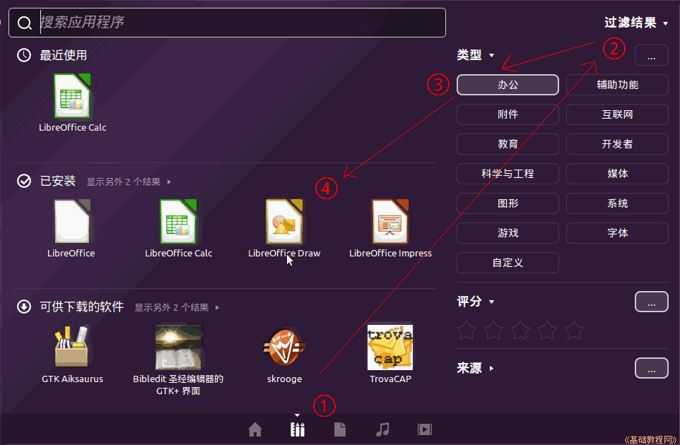
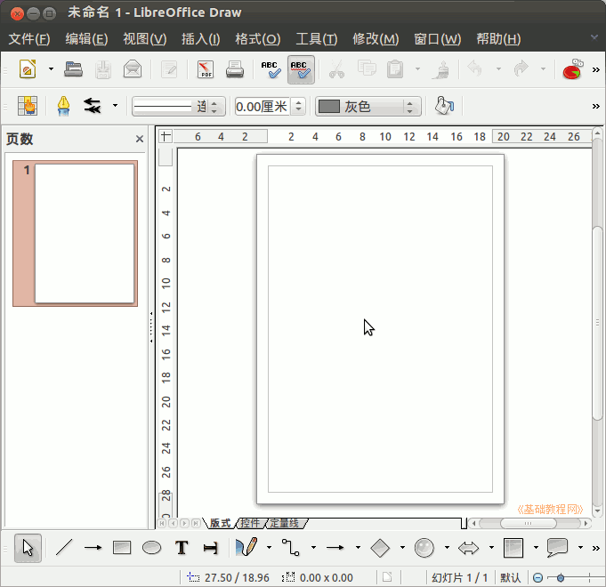
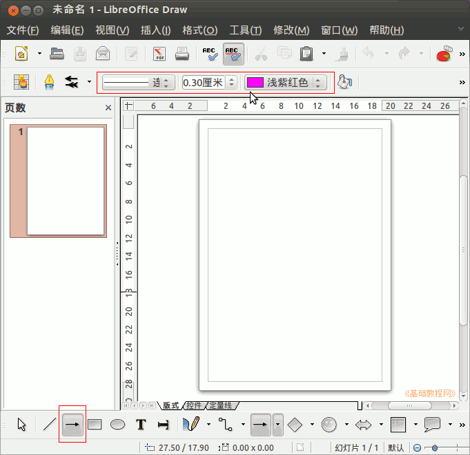
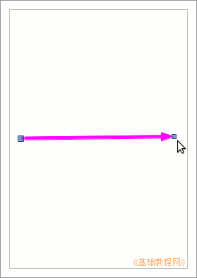
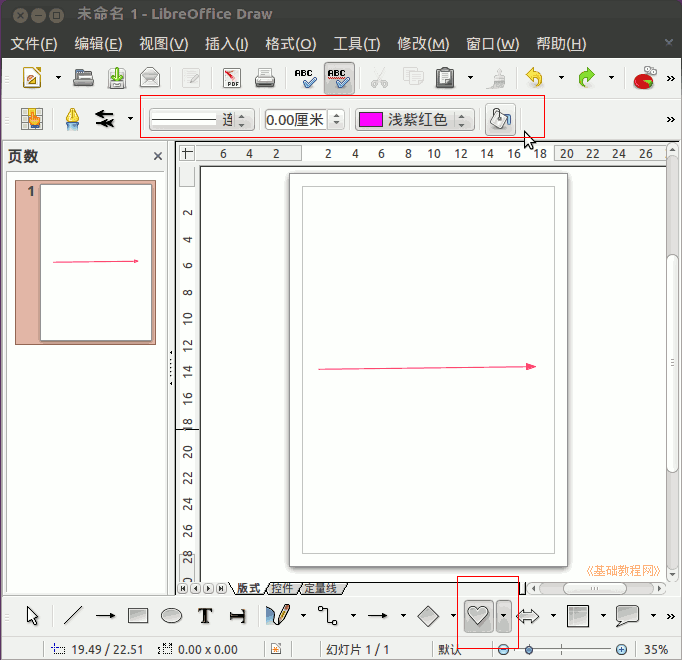
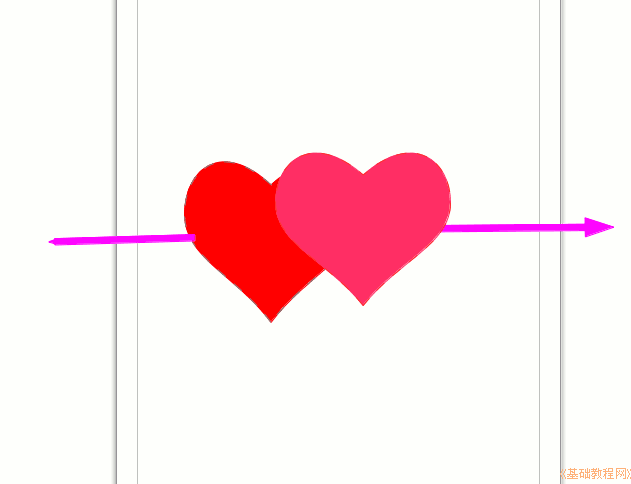
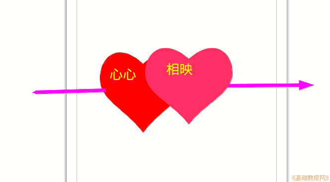
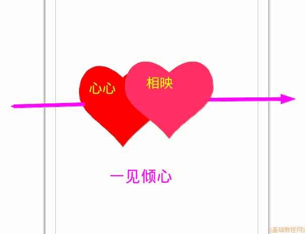

Ubuntu 入门操作指南
作者：TeliuTe 来源：基础教程网
三十五、LibreOffice Draw 返回目录 下一课这一课跟18课相同，只是为了分类的完整；
1、LibreOffice Draw 绘图
1）点击主按钮、所有程序、过滤结果、办公、LibreOffice Draw 绘图，打开程序；

2）程序上边是菜单和工具栏，中间是画纸，左边是缩略图，下面是绘图工具箱；

3）在下边选择箭头工具，再在工具栏上选择箭头的颜色为浅紫红色，粗细为0.3厘米；

4）在中间画布上，从左到右拖出一条直线，两边的控制点可以调整长短和方向；

5）再在下边工具箱里，点击一个小娃娃脸的“符号形状”按钮，选择心形图案，
在上边的工具栏里，将粗细调为0.00，点右边的油漆桶，选择颜色为“红色1”；

6）在画布中的线条上面画一个红色的心，调整好位置，再点下边的心按钮在旁边画另一个；

7）在红心里面双击鼠标左键，出来一个光标插入点，在上边工具栏右边点击颜色按钮选择黄色，输入“心心相映”；

8）再在下边工具箱中选择文字工具(T)，在上边工具栏中设置好字体、字号、颜色，输入文本“一见倾心”；

9）点菜单“文件、保存”，文件名为“心心相映”，再点“文件、导出”，在下边所有格式中选择 png 格式；
本节学习了 LibreOffice Draw 绘图的基础知识，如果你成功地完成了练习，请继续学习下一课内容；
本教程由86团学校TeliuTe制作|著作权所有
基础教程网：http://teliute.org/
美丽的校园……
转载和引用本站内容，请保留版权信息和本站链接。